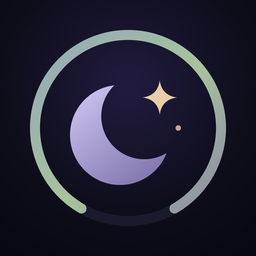

DreamshiftSupport
Questions, problems or ideas? Email drice1749@gmail.com. Say which device you're using (iPhone, iPad or Apple Watch) and what happened, and I'll get back to you.
Daniel Rice, developer of Dreamshift
Common questions
How do I share the log with someone who helps?
Settings → Invite someone to help, then enter their Apple ID (email or phone). Once the invite is ready, send it in Messages or copy the link. They open it on their iPhone and join your log. Both of you need to be signed in to iCloud.
My log isn't showing up on the other phone
Dreamshift syncs through iCloud. If a phone can't sync, its "on duty" dot turns red and reads "Not syncing"; tap it to see why. The most common cause is a full iCloud storage plan.
The feed alarm isn't in Settings
The feed alarm needs iOS 26.1 or later. Update iOS in Settings → General → Software Update.
How do I restore Dreamshift Family on a new phone?
Open the Dreamshift Family screen and tap Restore purchase, signed in with the Apple ID you bought it with.
What does the free version include?
Logging (including Siri and Control Center), the Now screen, Quick check and the last 7 days of history are always free. Dreamshift Family is a one-time purchase, with no subscription, that adds the Apple Watch app, widgets, the feed alarm, all your history, the pediatrician summary, sharing and the iPad nursery display. You can try it free for 14 days; nothing is charged automatically.
How do I delete my data?
See Deleting your data in the privacy policy.
Important
Dreamshift is a logging app. It is not a medical device or a baby monitor, and it doesn't give medical advice. If you're worried about your baby, contact your pediatrician or emergency services.